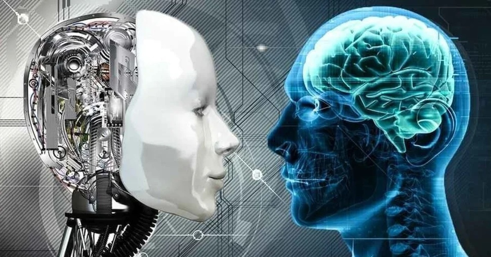

Американские ученые работали с роботом, оснащенным искусственным интеллектом, и выяснили, что он может продолжать работу, даже получив серьезные повреждения.
Разница между искусственным и естественным интеллектом
Сравнивать искусственный и естественный интеллект можно лишь по некоторым общим параметрам. Например, человеческий мозг и компьютер работают по примерно схожему принципу, включающему четыре этапа – кодирование, хранение данных, анализ и предоставление результатов. И естественный, и искусственный разум склонны к самообучению, они решают те или иные задачи и проблемы, используя специальные алгоритмы.
Помимо общих умственных способностей к рассуждению, обучению и решению проблем, человеческое мышление также имеет эмоциональную окраску и сильно зависит от влияния социума. Искусственный интеллект не имеет никакого эмоционального характера и не ориентирован социально.

Если говорить об IQ – большинство ученых склонны считать, что сей параметр оценки никак не связан с искусственным интеллектом. С одной стороны, это действительно так, ведь стандартные IQ-тесты направлены на измерение «качества» человеческого мышления и связаны с развитием интеллекта на разных возрастных этапах.
С другой стороны, для ИИ создан собственный «IQ-тест», названный в честь Тьюринга. Он помогает определить, насколько хорошо машина обучилась и способна ли она уподобиться в общении человеку. Это своего рода планка для ИИ, установленная людьми. А ведь все больше ученых склоняется к тому, что скоро компьютеры обгонят человечество по всем параметрам… Развитие технологий идет по непредсказуемому сценарию, и вполне допустимо, что так и будет.